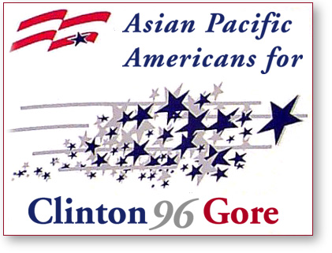
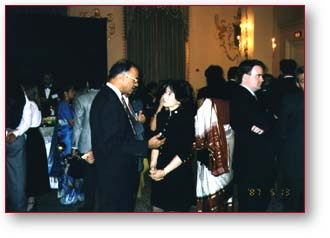

|
  Get Involved! To learn more about Asian Pacific American outreach
activities |
Bill Clinton and Al Gore on the Issues Strengthening America's
Families: For Immediate Release October 19 - Why Asian Pacific Americans Should Vote October 12 - The Growing Economy is Good for Asian Pacific American Families October 3 - Asian Pacific American National Governing Council Kickoff Efforts September 28 - Family and Medical Leave Act: A Record of Success for Asian Pacific Americans September 8 - Korean Americans for Clinton/Gore September 6 - Asian Pacific Americans Unite at the Democratic National Convention July 30 - Clinton/Gore
Opens |
Paid for by Clinton/Gore '96 General Committee, Inc.